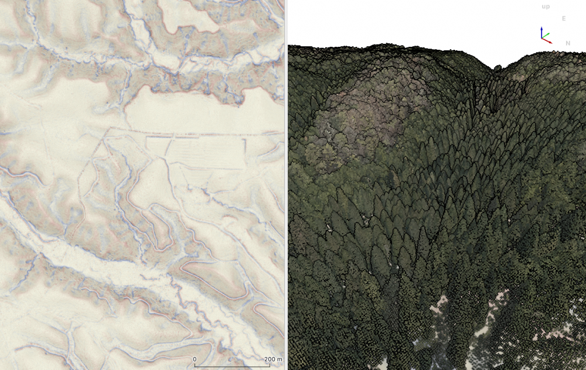
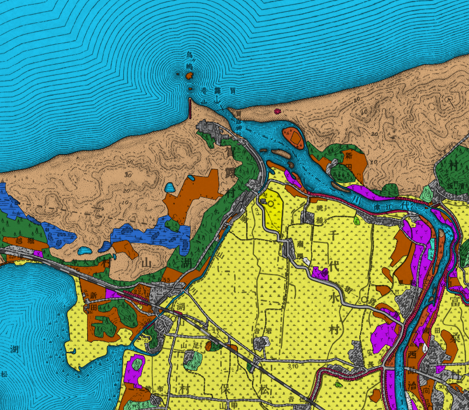
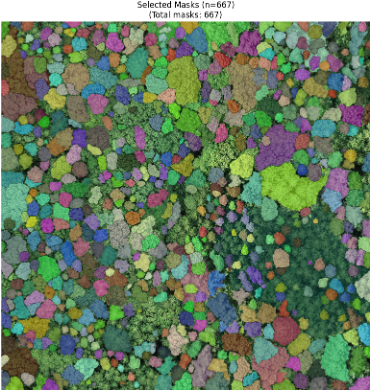

里地里山の変遷を最新のオープンな情報技術で解き明かす
農村およびその周辺の里地里山の歴史的土地利用の変化に関わる研究を、地理情報システム（GIS）を用いて行っています。
その成果を誰もが自由に利用できるようにするオープンデータの取組や、そうしたデータを効率的に活用するためのオープンソースソフトウェアの普及などにも取り組んでいます。
コンピューターに向かって地道な作業をしているときが、一番幸せです。

地理情報システムで表示した微地形表現図（左）と、航空機LiDARという機器で取得された3次元点群データの比較。
データ出典：おかやまインフラボックス、林野庁平成 30 年度森林域における航空レーザ計測業務(その1)（7林整治第 273号）
山陰地方における土地利用変化の解明と可視化
放牧、たたら、砂丘等、山陰地方の里地里山は特徴的な土地利用で構成されていました。これらの土地利用や景観は人々の生活の影響を受け、変遷してきました。そこで、既存文献、旧版地形図の収集や、オリジナルデータの蓄積、可視化手法の検討により、明治時代から現在までの長期間の土地利用や景観の変化の解明に取り組む研究です。データ作成が中心となる地道な作業が多いですが、歴史と現在をつなぐ重要な研究です

山陰地方の里地里山の特徴的な土地利用の一つである「たたら」の地形と、航空機LiDARという機器で取得された3次元点群データの比較。 明治時代後期に作成された旧版地形図から作成した、土地利用データです。現在に比べ、砂丘が広範囲にわたっていたことが読み取れます。
里地里山の地理空間情報モニタリング手法の開発
現在、ドローンによる空中写真の撮影、数ｍｍ以下の精度で位置を測定するRTK-GNSS、レーザービームを照射し対象物を点群データとして記録するLiDARなど、里地里山を観測する、様々な新しい手法が登場しています。特にLiDARで取得されたデータは、オープンデータとしても公開され、その活用が求められています。これらの手法で取得されたデータから、里地里山を管理するために必要な情報を抽出し、今後の変化をモニタリングするための方法の開発に取り組んでいます。また、基盤モデルと呼ばれる人工知能を活用することで、森林管理に有効な情報の抽出にも取り組んでいます。

ドローンによる空撮画像から、人工知能を用いて樹冠抽出を試みた例